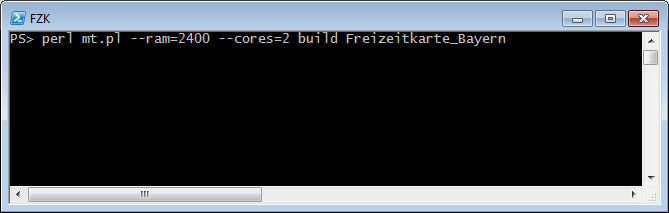

Everybody is invited to build ... an own map. This can be interesting for the following reasons:
- Be up-to-date:
It's possible to build a map with the most recent data. For this the OSM-data has to be downloaded and the map has to be built. All necessary steps are managed by Perl-script "mt.pl". - Content:
To build a map from OSM-data means data reduction. Only objects "worth" displaying are shown on the map. These definitions, which objects are shown, can subject to change for nearly every object. These definitions are configured in three style-files"polygons", "lines" and "points". These are plain text files and can be edited with an ordinary text editor (like TextWrangler for OS X oder Notepad++ for Windows). Most definitions are well commented to give a little help. - Design:
The design is responsible for the visual appearence. Every appearence of nearly every object can be changed. For areas this means e. g. the colour, for lines it means e. g. thickness and for POIs it could mean the icon. Responsible for the design is a (binary) TYP-file. This TYP-file has to be edited with a special editor like TYPViewer for Windows.
For about 15,000 years ago: The Rhine Falls in Schaffhausen is by far the largest waterfall in Europe.
In the summer rush to 150 meters wide on average 600,000 liters of water per second 23 meters in the depth.
The last two aspects "content" and "design" are closely related. If a complete new type of object should be displayed it is necessary to define it regarding the two aspects.
Workflow for creating a Freizeitkarte:
The exact workflow depends on the type of map to be generated. Basically there are two types supported by the development environment::
-
Maps based on existing OSM data extracts:
There are existing extracts downloadable at GeoFabrik for this map type. Therefore the workflow looks simplified as follows:
- One time completion of the development environment: downloading the boundaries into the development environment (bootstrap)
- Downloading the OSM data and the according elevation data of the wished map (fetch_*)
- Joining the downloaded OSM and elevation data (join)
- Spliting the complete data into smaller junks, so called tiles (split)
- Compiling the map (build)
- Creating the different versions for GPS, BaseCamp, and so on (gmap, nsis, imagedir, gmapsupp)
-
Maps for which we have to extract the wished region on our own:
For this map type there are no existing extracts for the wished region downloadable from GeoFabrik, this is why we have to download a bigger region (containing our wished region, in most cases complete Europe) and extract the wished region inside the development environment on our own. The workflow looks simplified as follows:
- One time completion of the development environment: downloading the boundaries into the development environment (bootstrap)
- Downloading the OSM data of the bigger region containing the wished one, normally complete Europe (fetch_osm)
- Extracting the wished region from the bigger one, e.g. DEU+ (extract_osm)
- Downloading the elevation data directly for the wished region, e.g. DEU+ (fetch_ele)
- Joining the extracted OSM data and the downloaded elevation data (join)
- Spliting the complete data into smaller junks, so called tiles (split)
- Compiling the map (build)
- Creating the different versions for GPS, BaseCamp, and so on (gmap, nsis, imagedir, gmapsupp)
Overview regarding workflow for both type of maps:
Operation:
MapTool (mt.pl):
If you call the utility "mt.pl" (MapTool) without any parameters, the following help text is displayed:
mt.pl - Map Tool for creating Garmin maps, 1.3.5 - 2014/01/07
Usage:
perl mt.pl [--ram=<value>] [--cores=<value>] [--ele=<value>] [--typfile="<filename>"] [--language="<lang>"] <Action> <ID> | <Code> | <Map> [PPO] ... [PPO]
or
perl mt.pl bootstrap [urls <url_bounds> <url_sea>]
perl mt.pl bootstrap list
or for getting help:
perl mt.pl -? | -h
Examples:
perl mt.pl bootstrap
perl mt.pl build Freizeitkarte_Hamburg
perl mt.pl --ram=1536 --cores=2 build Freizeitkarte_Hamburg
perl mt.pl --ram=6000 build 5815
perl mt.pl --ram=6000 --cores=max build 5815
perl mt.pl --ram=6000 --cores=max build Freizeitkarte_Oesterreich DT36ROUTING
Options:
--ram = javaheapsize in MB (join, split, build) (default = 1536)
--cores = max. number of CPU cores (build) (1, 2, ..., max; default = 2)
--ele = equidistance of elevation lines (fetch_ele) (10, 25; default = 25)
--typfile = filename of a valid typfile to be used (build, gmap, nsis, gmapsupp, imagedir, typ) (default = freizeit.TYP)
--language = overwrite the default language of a map (en=english, de=german);
if you build a map for another language than the map's default language,
this option needs to be set for all subcommands, else it swaps back to the default language and possibly fails.
PPO = preprocessor options (multiple possible), to be invoked with D<option>
Arguments:
Action = Action to be processed
ID = ID of the to processed map
Code = Code of the to processed map
Map = Name of the to be processed map
Actions:
bootstrap = Complete the Environment with needed downloads (boundaries)
create = 1. (re)create all directories
fetch_osm = 2a. fetch osm data from url
fetch_ele = 2b. fetch elevation data from url
join = 3. join osm and elevation data
split = 4. split map data into tiles
build = 5. build map files (img, mdx, tdb)
gmap = 6. create gmap file (for BaseCamp OS X, Windows)
nsis = 6. create nsis installer (for BaseCamp Windows)
gmapsupp = 6. create gmapsupp image (for GPS receiver)
imagedir = 6. create image directory (e.g. for QLandkarte)
ID = Code = Map (default language):
5810 = BADEN-WUERTTEMBERG = Freizeitkarte_BADEN-WUERTTEMBERG (de)
5811 = BAYERN = Freizeitkarte_BAYERN (de)
5812 = BERLIN = Freizeitkarte_BERLIN (de)
5813 = BRANDENBURG = Freizeitkarte_BRANDENBURG (de)
5814 = BREMEN = Freizeitkarte_BREMEN (de)
5815 = HAMBURG = Freizeitkarte_HAMBURG (de)
5816 = HESSEN = Freizeitkarte_HESSEN (de)
5817 = MECKLENBURG-VORPOMMERN = Freizeitkarte_MECKLENBURG-VORPOMMERN (de)
5818 = NIEDERSACHSEN = Freizeitkarte_NIEDERSACHSEN (de)
5819 = NORDRHEIN-WESTFALEN = Freizeitkarte_NORDRHEIN-WESTFALEN (de)
5820 = RHEINLAND-PFALZ = Freizeitkarte_RHEINLAND-PFALZ (de)
5821 = SAARLAND = Freizeitkarte_SAARLAND (de)
5822 = SACHSEN = Freizeitkarte_SACHSEN (de)
5823 = SACHSEN-ANHALT = Freizeitkarte_SACHSEN-ANHALT (de)
5824 = SCHLESWIG-HOLSTEIN = Freizeitkarte_SCHLESWIG-HOLSTEIN (de)
5825 = THUERINGEN = Freizeitkarte_THUERINGEN (de)
6040 = AUT = Freizeitkarte_AUT (de)
6056 = BEL = Freizeitkarte_BEL (en)
6756 = CHE = Freizeitkarte_CHE (de)
6203 = CZE = Freizeitkarte_CZE (en)
6208 = DNK = Freizeitkarte_DNK (en)
6276 = DEU = Freizeitkarte_DEU (de)
6250 = FRA = Freizeitkarte_FRA (en)
6442 = LUX = Freizeitkarte_LUX (en)
6528 = NLD = Freizeitkarte_NLD (en)
6616 = POL = Freizeitkarte_POL (pl)
6752 = SWE = Freizeitkarte_SWE (en)
Terminal / command window:
- The operations to generate a map are entered in a terminal / command window
- These individual commands needs to be manually entered in the terminal
- Or, alternatively, a corresponding batch files can be generated

Requirements:
- Perl (5.10) must be installed
- Java (1.7) must be installed
- At least 2 GB of memory
Recommendations for generating a map for a State:
- See requirements
- Default Settings
Recommendations for generating a map of Germany:
- Powerful multi-core CPU
- Java Virtual Machine with 64bit
- For each used core at least 2 GB of RAM are necessary
Note:
- The first map should be generated with the smallest possible map
- The build process of the map of Germany takes about 45 minutes by using 4 CPU cores
- Further information on the development environment is in the file "readme.txt"
- The development environment runs on OS X, Windows and Linux
- On 64-bit Linux systems, the support for 32-bit programs must be installed
- To generate the Windows installer under Linux, the NSIS (Nullsoft Scriptable Install System) package must be installed
Options:
There are options available to change the map style which can be activated:
- WINTERSPORT: display of lines for winter sports (slopes, tracks, ...) [lines-master]
- T36ROUTING: routing via hiking/ alpin tracks class T3-T6 [lines-master]
- TRIGMARK: display of trigonometric markers [points-master]
- DRINKINGWATER: display of drinking water points [points-master]
- KULTURLAND: display of farmer land [polygons-master]
Freizeitkarte development environment - Release 14.05 (~30 MB):
Additional Information:
Starting with Release 14.05 the downloadable development environment is hosted on github and has a new filename (fzk‑mde‑garmin‑LATEST.zip). Inside this file the well known directory Freizeitkarte‑Entwicklung is boxed in an additional directory with the name fzk‑mde‑garmin‑Latest.